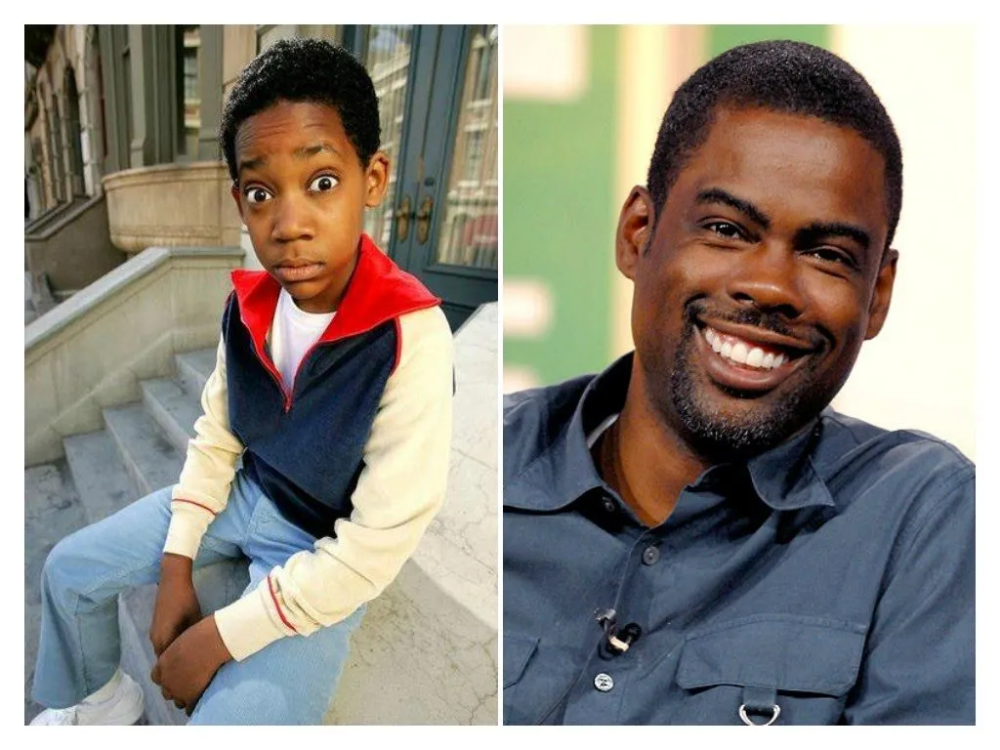
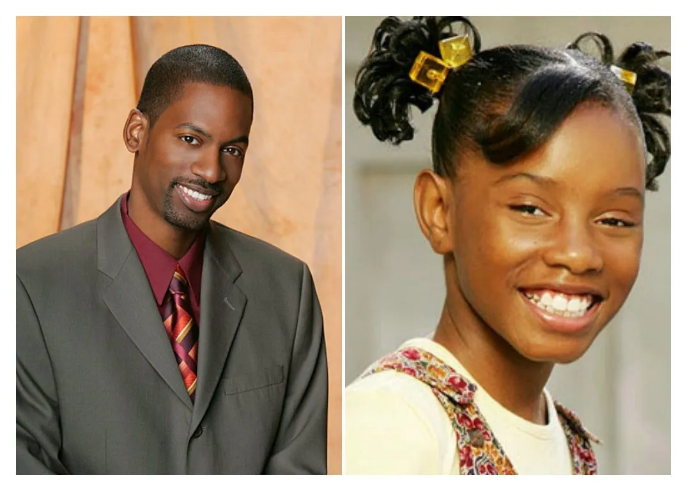
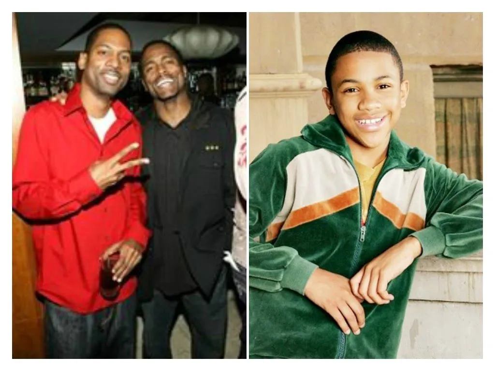
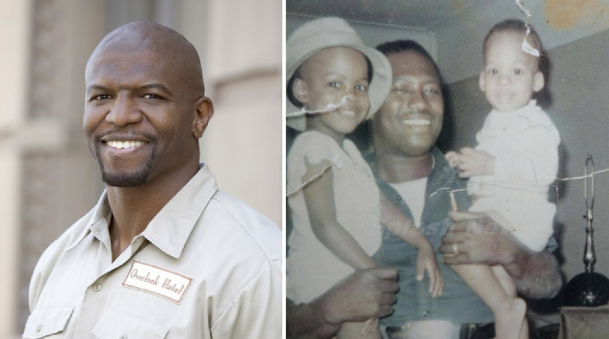

Todo mundo odeia o chris
Introdução à história real de chris rock
Se você nunca se contorceu de rir com as histórias mal-sucedidas de Chris ou, nunca ficou com medo dos gritos de Rochelle, não sabe o que é diversão na vida. O seriado Todo Mundo Odeia o Chris, transmitido entre 2005 e 2009 (com quatro temporadas), apesar de caricato e um tanto exagerado, já fez todo mundo parar para pensar na vida e na relação familiar. O que ninguém sabe, no entanto, é que por trás de tanta palhaçada e das experiências sempre ruins de Chris com a vida, existe um fundo de verdade. Isso porque toda a trama da série é baseada na infância do ator e comediante Chris Rock, que participa do seriado com alguns papéis menores e é o narrador. Claro que muitas adaptações da história real foram feitas até a família da ficção chegar ao formato que foi para a TV, até porque o astro de Hollywood tem sete irmãos e seria bem difícil colocar todo mundo no enredo. Mas, no final deu tudo certo e a história saiu melhor que a encomenda, não é mesmo? Confira abaixo, um pouco mais da história verdadeira e os personagens de Todo Mundo Odeia o Chris:
Chris (Chris Rock)
Como o criador da série, o ator colocou no enredo de Todo Mundo Odeia o Chris um pouco de suas experiências de infância, em especial da época em que se mudou para o Brooklyn com sua família. Na época, o ator realmente precisou frequentar escolas populares, com a grande maioria de alunos brancos; e, por isso, enfrentava toda a espécie de bullying e racismo. Antes de seguir o ramo da fama, a juventude de Chris foi marcada com uma série de trabalhos em fast foods.
Tonya (Na verdade, é Tony Rock)
Embora seja uma menina na série, a personagem de Tonya foi baseada no irmão mais novo de Chris, Tony. Na vida adulta, Tony também se tornou comediante.
Drew (Andrew Rock)
Outro irmão de Chris que ganhou um personagem no seriado foi Andrew, que foi apelidado de Drew. Havia outros 5 irmão reais do ator, que acabaram não entrando no enredo da série.
Rochelle (Rosaline Rock)
A mãe de Chris, na vida real, se chama Rosaline e, ao invés de dona de casa (e várias outras profissões ao longo da série), era professora. O temperamento, no entanto, era o mesmo, segundo Chris.
Julius (Christopher Julius Rock II)
O pai de Chris, na vida real, também trabalhava como caminhoneiro e entregador de jornais. Mas, ao contrário da história na TV, o pai do ator morreu em 1988, após uma cirurgia de úlcera.